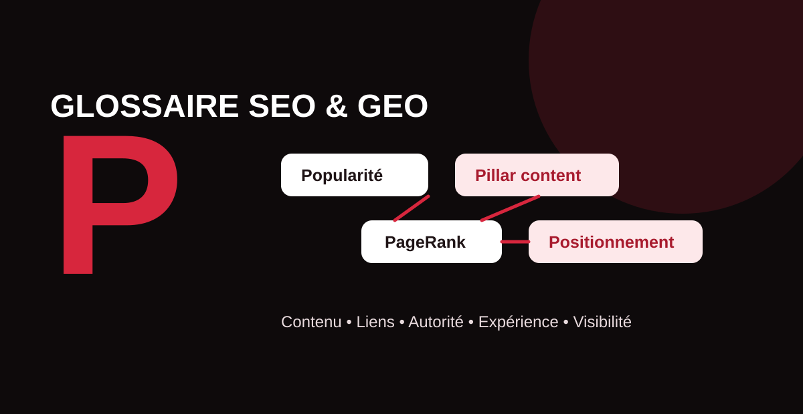

La performance SEO ne dépend pas d’un facteur unique. Elle résulte d’un ensemble cohérent : contenus utiles, architecture claire, popularité, liens pertinents, expérience utilisateur et capacité à répondre précisément aux intentions de recherche. Ce guide MinoSeo décrypte neuf notions en P et les replace dans une stratégie SEO et GEO moderne.

Popularité
En SEO, la popularité décrit la reconnaissance d’un site sur le web, notamment à travers les liens et mentions provenant d’autres sources. Tous les liens ne se valent pas : leur contexte, leur pertinence thématique, la qualité de la page source et leur caractère naturel comptent davantage qu’une accumulation artificielle.
La popularité complète la pertinence du contenu et la qualité technique. Une page excellente mais isolée peut manquer de signaux externes ; à l’inverse, des liens ne compensent pas durablement un contenu faible. En GEO, les mentions de marque et la cohérence de l’expertise sur plusieurs sources peuvent aussi contribuer à rendre une entité plus identifiable.
pillar content
Un pillar content, ou contenu pilier, est une ressource centrale qui couvre largement un sujet stratégique et renvoie vers des contenus plus spécialisés. Il sert de point d’entrée à un cluster thématique : la page pilier traite la vision d’ensemble tandis que les pages satellites approfondissent les questions précises.
Cette organisation aide les lecteurs à progresser dans le sujet et facilite un maillage interne logique. Pour le SEO et le GEO, elle permet aussi de rendre l’expertise d’un site plus explicite : définitions, sous-thèmes, relations entre concepts et ressources complémentaires deviennent plus faciles à parcourir et à interpréter.
Plume ai
Plume AI / Plume SEO désigne ici un outil de rédaction assistée par intelligence artificielle orienté contenu SEO. Ce type de solution peut analyser une requête, proposer une structure, assister la rédaction et aider à préparer un contenu pour le référencement. Les fonctionnalités exactes dépendent du service et de sa version.
L’intérêt d’un outil IA réside surtout dans l’accélération du travail préparatoire et éditorial. Il ne remplace cependant ni l’expertise métier, ni la vérification des faits, ni l’analyse de l’intention de recherche. Un contenu généré doit être relu, enrichi d’informations originales et aligné avec la voix de la marque.
points de friction
Les points de friction sont les obstacles qui ralentissent, compliquent ou interrompent le parcours d’un utilisateur : navigation confuse, page lente, formulaire trop long, CTA peu visible, texte difficile à lire, pop-up intrusive ou manque de réassurance.
Ils ne constituent pas un facteur SEO unique, mais ils peuvent dégrader l’expérience et les conversions. Une stratégie efficace observe donc à la fois la visibilité organique et ce qui se passe après le clic. Réduire les frictions aide une landing page à transformer davantage de visiteurs en prospects, sans nécessairement augmenter le trafic.
Permaliens
Un permalien est l’URL durable attribuée à une page, un article ou une ressource. Une bonne URL doit rester simple, descriptive et stable. Elle aide l’utilisateur à comprendre où il se trouve et facilite la gestion du site sur le long terme.
Évitez de modifier inutilement des URL déjà établies. Lorsqu’un changement est nécessaire, prévoyez une redirection permanente appropriée, mettez à jour les liens internes et contrôlez les URL canoniques. Une architecture de permaliens cohérente réduit également les risques de duplication et d’erreurs lors des migrations.
PBN
Un PBN (Private Blog Network) est un réseau de sites contrôlés dans le but principal de créer des backlinks vers un ou plusieurs sites cibles afin d’influencer leur classement. Cette pratique est risquée lorsqu’elle vise à fabriquer artificiellement des signaux de popularité.
Google considère les liens créés principalement pour manipuler le classement comme du link spam. Un réseau artificiel peut donc perdre sa valeur, être neutralisé ou exposer le site bénéficiaire à des problèmes de visibilité. Une stratégie durable privilégie des liens éditoriaux justifiés par le contenu et la relation entre les sites.
Position 0 Google
La position 0 est une expression SEO traditionnellement utilisée pour parler du featured snippet, un extrait mis en avant au-dessus ou autour des résultats organiques classiques selon la présentation de la SERP. Google sélectionne automatiquement les pages susceptibles de fournir une réponse pertinente : il n’existe pas de balise permettant d’obtenir cette place sur demande.
Pour augmenter les chances d’être facilement compris, une page peut formuler une réponse directe, puis développer le sujet avec des étapes, listes, tableaux ou définitions lorsque cela est pertinent. Cette clarté est également utile en GEO, où les systèmes génératifs doivent identifier rapidement des passages factuels et contextualisés.
Pagerank
PageRank est un système historique développé par Google pour évaluer l’importance relative des pages à partir de la structure des liens. L’idée fondamentale est qu’un lien peut être interprété comme un signal entre pages, avec une valeur qui dépend elle-même du contexte et des pages qui transmettent ce signal.
Le PageRank public affiché autrefois dans la barre d’outils Google n’est plus un indicateur à suivre. Pour un responsable SEO, l’enseignement pratique reste néanmoins essentiel : les liens internes et externes structurent la circulation de l’autorité et la découverte des contenus. Il faut donc raisonner en architecture et en pertinence, pas seulement en quantité de backlinks.
Positionnement referencement
Le positionnement en référencement correspond à la place occupée par une page dans les résultats pour une requête, un appareil, une zone géographique et un moment donnés. Il ne faut pas le confondre avec l’indexation : une page peut être indexée sans être bien positionnée.
Le suivi du positionnement permet d’identifier les progressions, pertes et opportunités. Mais une stratégie SEO ne doit pas se limiter à une position moyenne : impressions, clics, CTR, conversions, pages d’entrée, visibilité de marque et présence dans les réponses enrichies ou génératives complètent l’analyse.
Comment relier ces notions dans une stratégie SEO et GEO ?
| Notion | Objectif | Point de vigilance |
|---|---|---|
| Popularité | Renforcer l’autorité et la reconnaissance | Qualité et pertinence avant volume |
| Pillar content | Structurer l’expertise autour d’un sujet | Relier les contenus par un maillage logique |
| Plume AI | Assister la production de contenu | Validation humaine et fact-checking |
| Points de friction | Fluidifier le parcours et la conversion | Mesurer le comportement réel |
| Permaliens | Créer des URL stables et compréhensibles | Éviter les changements inutiles |
| PBN | Réseau destiné à générer des liens | Risque élevé de link spam |
| Position 0 | Réponse mise en avant dans Google | Aucune garantie d’obtention |
| PageRank | Comprendre le rôle de la structure des liens | Ne pas le réduire à une métrique tierce |
| Positionnement | Mesurer la visibilité sur les requêtes | Compléter par trafic, CTR et conversions |
Ces notions montrent qu’une visibilité solide repose sur un système complet : des pages structurées, une expérience sans friction, une architecture de liens cohérente, une popularité légitime et un suivi régulier des performances. Le GEO ajoute une exigence supplémentaire : rendre les informations explicites, vérifiables et faciles à réutiliser dans des réponses synthétiques.
Renforcez votre positionnement SEO et GEO
MinoSeo analyse vos contenus, votre maillage, votre popularité et vos opportunités de visibilité pour construire une stratégie durable.
Demander un audit gratuit